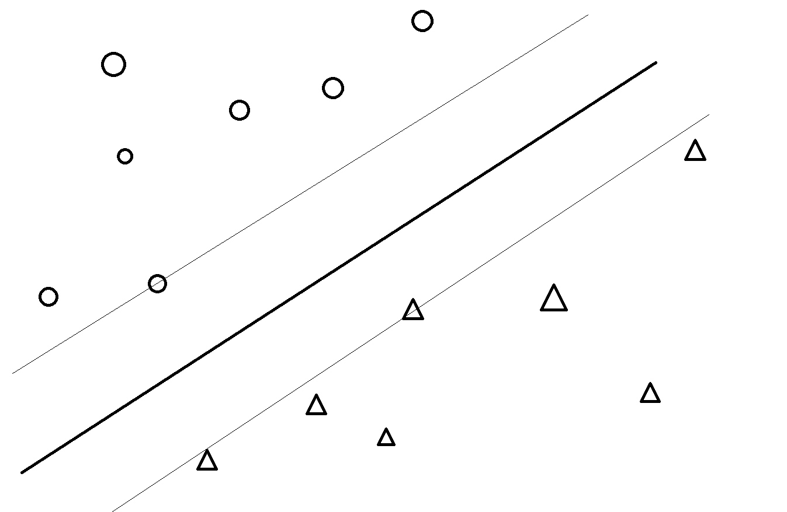
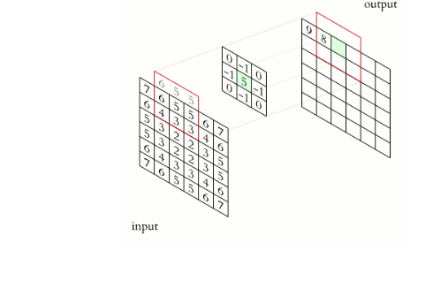
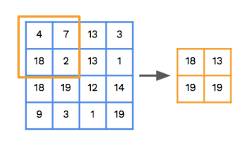

This guide will give you a basic overview of some different kinds of AI. This is not a comprehensive
overview, and doesn't go too deep into many of the technical details.
AI is, by definition, just some kind of artifical intelligence. This means, obviously, some program that can
somehow emulate what a real intelligent person might be able to do. This can mean playing a video game,
recognizing cancer cells, generating text (eg chatgpt), or anything else.
In practice, this usually means taking some data and 'teaching' the machine to recognize or imitate a
pattern in it. The way the machine learns the pattern is determined by the type of AI used. In this guide,
we'll go over some of these kinds.
Two common uses of AI are regression: finding a continuous value, ie a number, like the size of an animal; and
classification, assigning a discrete label to a value like whether an email is spam or not.
K-Nearest Neighbors
K-Nearest neighbors is a relatively simple classification or regression algorithm. It takes a set of labeled
points, and when finding a new value, it assigns it to be whatever the majority of the nearest k neighbors
are, where k is a hyperparameter (a pre-set number, constant throughout the process of running the
algorithm).
K-Nearest neighbors usually uses euclidean distance (just a straight line), but it can also use other
distance functions like taxicab (only moving with horizontal/vertical lines) or more complex ones.
Try playing with the k=3 simulation below; you can drag around the circle with a black outline. It has two
parameters and two output classes; you could imagine it as, for example, determining whether an animal is a
reptile or mammal based on its body heat (x-axis) and tongue length (y-axis). Most networks will need more output
classes and paramaters, so they would have more than just blue and red and would need more than two dimensions in
the graph.
Linear Regression
Linear regression is a more complex form of regression. It solves for the best linear line (ie. y=mx+b) to
minimize the error from some set of data points.
Effectively, this means solving for the best m and the best b. There are many different algorithms for finding
these variables, such as ordinary least squares. There are also different error functions, which the algorithm
tries to minimize; the most widely used is the MSE, or mean-squared-error, but MAE (mean-absolute-error) is also
common.
Linear regression is extended to more than just two dimensions by making the equation \(x_1m_1 + x_2m_2 + x_3m_3 +
... + x_nm_n\) for \(n\) dimensions, where each \(m\) is one more variable the AI will try to optimize and each
\(x\) is one more input.
Linear regression is very effective at finding future values for systems that can be modeled linearly, and has a
wide range of uses.
Try to be your own linear regression model: find the optimal m and b models to minimize the mean square error.
Logistic Regression
Logistic regression is very similar to linear regression, but rather than modelling a curve it models the sigmoid
function, a special case of the logistic function.
The sigmoid function is a curve between 0 and 1, defined by \(\frac{1}{1+e^{-z}}\). \(z=mx+b\), or a more complex
equation similar to linear regression if more dimensions are needed. In effect, this means there's a line z, where values above are labeled by the category and values below are not.
The special use of logistic regression is to allow classification, rather than regression; because all values of
the sigmoid function are between 1 and 0, they can be interpreted as a probability. Then, by checking whether the
value is above or below the halfway mark (0.5), you can check if the input is labeled by some classification.
This can be generalized to more than just one classification (more than just a 'binary' problem) by using the
softmax function rather than the sigmoid function; softmax allows the network to output probabilities for multiple
categories.
In the graph below, try to best fit the line to the binary system. Keep in mind it might not be possible to get them all on the right side; just try to get as many as possible.
Decision Trees
Decision trees are a relatively simple to implement classification algorithm which can still yield good results.
They are essentially a 'tree' of nodes, each of which are an if-then statement of checking whether the value is
less than some value, and at the bottom level of each path there is a 'leaf' node which leads to some final
classification.
This essentially partitions the graph into many different classifications, cutting it up into many different
rectangles which each have some label attached.
Because of their simplicity, decision trees often overfit the data, fitting the tree far too closely to the data
points to be useful for other data. There are some methods, like pruning (removing unnecessary branches) which
help, as well as more complex ones like combining trees with methods like random forests.
Support Vector Machines
Support vector machines (SVM) are a classification algorithm. They find the best line (or, in higher dimensions,
hyperplane) to seperate the classes onto different sides and maximize their distances from the line.

The algorithm gets its name from its 'support vectors', which each pass through a data point.
SVMs are very effective at modeling linear systems, and are widely used. For nonlinear systems, SVMs can be used
when applying the "kernel trick", a method to turn the original nonlinear system into a linear one in higher
dimensions. Common ones are polynomials, radials, and sigmoids (just like for logistic regression!).
Multilayer Perceptrons
Multilayer perceptrons (MLPs) are one of the most versatile and widely used AI algorithms, and are the basis of
modern deep learning.
MLPs are networks of nodes, each of which is connected to each node of the following layer. Each of these
connections have a 'weight', which says how much that connection matters, and each node has a 'bias', an initial
push in some direction.
The network is inputted to by setting the values in the first layer, and outputs are found by doing a forward pass
through each layer and eventually leaving values in the last layer. This means an MLP can have an arbitrary number
of inputs, outputs, and layers between them (also called 'hidden layers', for some reason). This allows MLPs to be
scaled up significantly-- however, having too many hidden layers often leads to overfitting.
Once forward passes have been done, the MLP goes through a backward pass, also called backpropagation, where it
adjusts all of its weights and biases to better fit each datapoint of input and output.
An MLP can do both classification and regression; it can output just continuous values, but those continuous
values can also be put through a softmax function to turn it into classification.
Recursive Neural Networks
Recursive neural networks (RNNs) are a special type of neural network which specializes in sequential data, such
as text (one word after another) or timed events (one event after another).
RNNs can 'remember' previous inputs much better than MLPs and many other types of networks, allowing them to
better deal with sequential data. This comes from their recursive hidden layer (which is their namesake), which
takes both the current values and previous outputs as inputs. This allows it to use all the values as context,
making it much better at things like text creation.
Recently, RNNs have been mostly replaced with transformers, a more advanced algorithm which is more efficient and
effective at text generation.
Convolutional Neural Networks
Convolutional neural networks (CNNs) are a type of neural network that specializes in recognizing specific
features in images. It uses three types of layers: a convolution layer, a pooling layer, and feedforward layers.
The convolution layer applies a kernel; a small matrix which applies some 'filter'; to each subset of equal size
in the input matrix.

This kernel is optimized by the network to make the resulting image 'sharpened'; it gives the highest values to
the most important parts of the image.
Then, in the pooling layer, the maximum values in each section of the matrix are combined into a new smaller
matrix. Although this loses a lot of information, it raises efficiency a lot and helps prevent overfitting.

Then, this final matrix is passed through some number of fully-connected layers (like those in an MLP), which lead
to a final output layer. These can be interpreted as the probability the image has whatever feature that output is
correlated to.
Q-Learning
Q-learning is a type of reinforcement learning. Reinforcement learning, unlike supervised learning which tries to
model some function given the inputs and outputs, tries to find the best function for an agent in an environment.
This often is used for trying to train an AI to play video games, by letting the AI control the game and having it
try to maximize its score in the game.
Q-learning is an algorithm in which the network tries to find the Q-values of actions in an environment through
trial and error, and then uses them to find the optimal path. A Q-value of an action is the expected cumulative
reward of taking it and then following the optimal path. The algorithm finds these by finding rewards for some
actions, and then balances exploitation (choosing the best known Q-value) and exploration (choosing unknown values
and finding new Q-values) until it converges on an optimal or near-optimal policy.